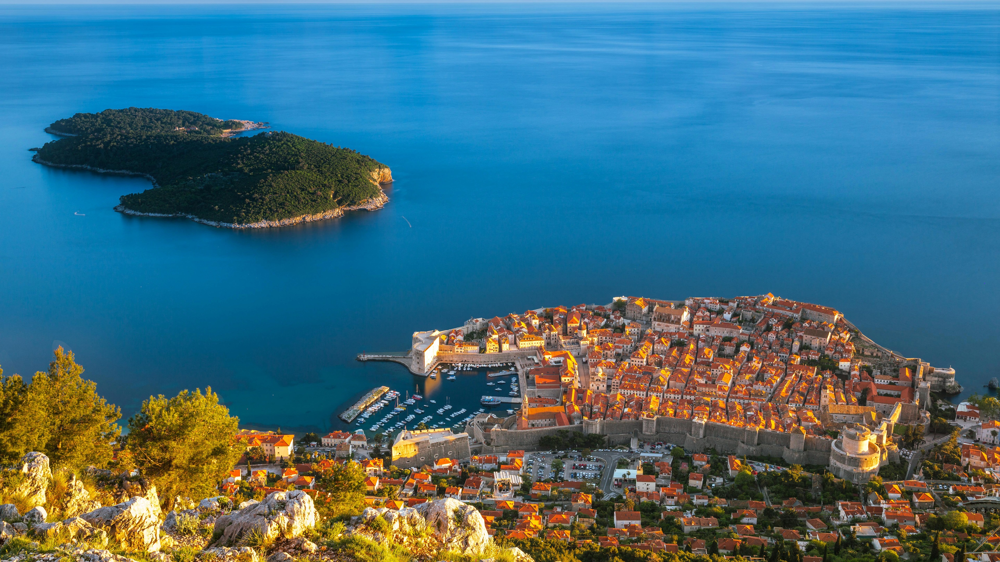

Tras la guerra que asoló el país, Croacia ha reconstruido su
infraestructura, revitalizando su imagen de país Mediterráneo con aguas
cristalinas, ciudades medievales que mezclan la arquitectura occidental
y oriental, el respeto por el medio ambiente y las tradiciones con la
llegada de turismo.
Dubrovnik se ha convertido en el símbolo más
característico de esta nueva Croacia que apuesta fuerte por el turismo
europeo.
Está desarrollando un tipo de turismo basado en la
sostenibilidad, en la que la cultura, la gastronomía y la naturaleza
conviven con el visitante,
ofreciéndole la experiencia de descubrir Croacia formando parte de ella.
Destino turístico habitual de italianos y alemanes Croacia progresa a
una velocidad inusitada en el escalafón de los países más visitados
por los europeos.
De hecho los viajes a Croacia son mucho mas populares
hoy en día que hace años.
Desde España el interés por conocer Croacia ha
crecido con la apertura de nuevas líneas de vuelos de bajo coste desde
Madrid y Barcelona hasta los aeropuertos croatas.
Cada vez hay más
interés por conocer Croacia ya sea a través de cruceros por sus costas,
o rutas y circuitos por las ciudades de la costa dálmata.